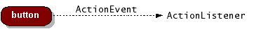

イベントモデルについて
イベント処理の流れを間単に確認しておきます。
まずボタンやテキストなどのコンポーネントが何のイベントを受け取るのかを指定します。これは例えばボタンについて考えてみると、ボタンが押されたとか、ボタンの上でマウスが動いたなどの様々なイベントが絶えず発生していますが、必要の無いイベントについては処理する必要が無いため、自分で処理したいイベントだけ受け取るようにするためです。
次に、各コンポーネントなどにイベントが発生した場合の処理の記述ですが、Javaではイベントを処理する専用のクラスを用意し、その中で処理を記述します。その処理を記述するクラスがリスナーと呼ばれるものになります。
※Sunのホームページでは下記のような図で記述されています。

例としてActionEventを見てみます。ActionEventはボタンを押すといった動作を行った際に発生するイベントですが、記述方法としては下記のようになります。
まず対象となるボタンがActionEventを受け取ることができるように、ボタンに対してaddActionListenerメソッドを実行します。
public class MyClass{
JButton btn = new JButton("test");
btn.addActionListener(new myListener());
}
これでボタンがActionEventを受け取れるようになります。またaddActionListenerメソッドの引数には、このイベントを処理するリスナーのクラスを指定します。
次にActionEventを処理するリスナーを作成します。ActionEventの場合にはActionListenerをインプリメントしたクラスを作成します。
public class myListener implements ActionListener{
}
作成したクラスの中でイベントが発生した時に呼び出されるメソッドはあらかじめ決まっており、そのメソッドの中でイベントが発生した時に行いたい処理を記述します。ActionListenetの場合はactionPerformedというメソッドが呼び出されます。
public class myListener implements ActionListener{
public void actionPerformed(ActionEvent e){
/* 処理したい内容をここに記述する */
}
}
記述方法としてはこのような感じです。受け取りたいイベントを指定し、リスナーを用意したあとで実行したい処理をリスナーの中のメソッドの中に記述していきます。
また、上記ではリスナークラスとして別のクラスを用意しましたが、呼び出し元のクラスにActionListenerをインプリメントすることができます。例えば次にように記述します。
public class MyClass implements ActionListener{ JButton btn = new JButton("test"); btn.addActionListener(this); public void actionPerformed(ActionEvent e){ /* 処理したい内容をここに記述する */ } }
addActionListenerメソッドの引数にはActionEventを処理するリスナークラスを指定していました。今回の場合は自分自身のクラスがリスナークラスも兼ねているので、自分自身を表す"this"を指定しています。
どちらの記述方法でも構いません。例えば次の例ではボタン毎に別々のリスナークラスを用意しています。
public class MyClass{
JButton btn1 = new JButton("test");
btn1.addActionListener(new myListener1());
JButton btn2 = new JButton("test");
btn2.addActionListener(new myListener2());
}
public class myListener1 implements ActionListener{
public void actionPerformed(ActionEvent e){
/* ボタン1の処理したい内容をここに記述する */
}
}
public class myListener2 implements ActionListener{
public void actionPerformed(ActionEvent e){
/* ボタン2の処理したい内容をここに記述する */
}
}
また次の場合のように1つのactionPerformedメソッドの中で、どのボタンでイベントが発生したのかを判別して処理を分けるような記述も可能です。
public class MyClass implements ActionListener{
JButton btn1 = new JButton("test");
btn1.addActionListener(this);
JButton btn2 = new JButton("test");
btn2.addActionListener(this);
public void actionPerformed(ActionEvent e){
if (ボタン1が押された場合){
/* ボタン1の処理したい内容をここに記述する */
}else if (ボタン2が押された場合){
/* ボタン2の処理したい内容をここに記述する */
}
}
}
匿名クラスを使った記述方法
匿名クラス(又は無名クラス)を使った書き方も見ておきます。匿名クラスとは名前を持たないクラスのことで、通常のクラスを作る場合と比べて制約などもあるようですがイベント処理の場合にはよく使われています。
リスナーインターフェースを実装したクラスを別途作るのではなく、各コンポーネントにリスナーを登録する際に合わせてクラスも定義してしまいます。言葉でいうとややこしいのですが、下記のような感じです。
public class MyClass{
JButton btn = new JButton("test");
btn.addActionListener(
new ActionListener(){
public void actionPerformed(ActionEvent e){
/* 処理したい内容をここに記述する */
}
}
);
}
addActionListenerメソッドの引数にはリスナークラスを今までは指定していましたが、この場合はそこにクラス定義を直接書いてしまいます。このような記述方法にした場合、コンポーネント単位で処理内容を記述することになります。
イベントの発生条件
どんな時にイベントが発生するのかも一部見ておきます。
| イベントの発生条件 | 対応するリスナータイプ |
|---|---|
| ボタンをクリックする、テキストフィールドで文字入力中にEnterキーを押す、メニューアイテムを選択する | ActionListener |
| フレームを閉じる | WindowListener |
| コンポーネントの上にマウスがある時にマウスを押す | MouseListener |
| コンポーネントの上にマウスがある時にマウスを動かす | MouseMotionListener |
| コンポーネントがキーボードフォーカスを取得する | FocusListener |
| テーブル又はリストの選択項目を変更する | ListSelectionListener |
上記は一部抜粋ですが、このような時にイベントが発生します。
( Written by Tatsuo Ikura )

著者 / TATSUO IKURA
初心者～中級者の方を対象としたプログラミング方法や開発環境の構築の解説を行うサイトの運営を行っています。